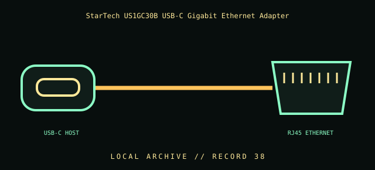

[ INDIVIDUAL COMPONENT // CABLES & ADAPTERS ]
StarTech US1GC30B USB-C Gigabit Ethernet Adapter
StarTech.com US1GC30B USB-C to 10/100/1000 Ethernet adapter. This entry identifies the documented model and does not claim that visually similar products share its pinout, protocol, capability, or host compatibility.

COMPATIBILITY WARNING: Verify the exact product model, host/device role, signal protocol, electrical requirements, and manual before connection. Connector fit alone does not prove compatibility.
Specifications
| Catalog subcategory | Network and fiber cables |
|---|---|
| Catalog identity | StarTech.com US1GC30B USB-C to 10/100/1000 Ethernet adapter |
| Verified protocol / model information | USB-C host connector to RJ45 Ethernet; StarTech lists 10/100/1000 Mbps Ethernet and USB-C/Thunderbolt 3 host compatibility. This is an active network interface adapter, not a passive cable. |
| Connector ends | USB-C HOST → RJ45 ETHERNET; diagram is schematic, not a pinout map. |
Physical & electrical compatibility
Requires a host USB-C port and operating-system/network driver support; USB-C connector alone does not guarantee Thunderbolt or Ethernet functions. Ethernet link rate is negotiated with the switch and cabling. Use an appropriately rated RJ45 patch cable and do not confuse the adapter with PoE power sourcing equipment.
Archival & handling notes
Record host OS/driver, chipset/model, switch port, and negotiated link rate. Protect RJ45 latch and USB-C plug; avoid side-loading the adapter when connected directly to a laptop.
Record provenance, condition, label photographs, exact full part number/revision, host system, and any test method/result. Preserve packaging and source documents with the cable when available.
Manufacturer & standards references
- StarTech — US1GC30B USB-C Gigabit Ethernet adapterManufacturer model and 10/100/1000 Mbps Ethernet identity.
- IEEE 802.3 Ethernet working groupStandards reference for copper Ethernet link modes.
Manufacturer documentation applies to the cited model; standards references describe the protocol family. Where product revisions or device support vary, the exact manufacturer manual and host documentation take precedence.